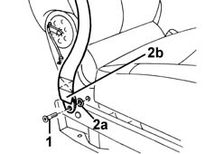
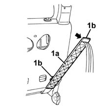
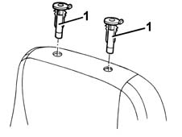
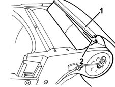
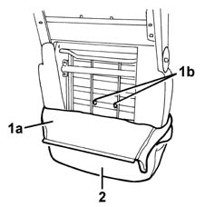
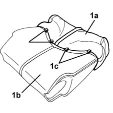
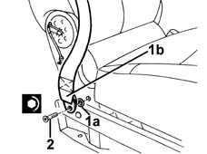

7045A94 Centre front seat COVER - R.R. with seat removed
- Path
- Procedures > 70 FITTINGS > 7045 FRONT SEATS > 7045A front seat assembly > 7045A94 Centre front seat COVER - R.R. with seat removed
- Kind
- repair procedure (removal / refitting; the operation number is the code)
- Applies to
- all engines; all production periods
- Interactive page
- https://sloeber94.github.io/elrnDB-fMltpl/en/#/2892232
Applies to: all engines; all production periods
 Removing
Removing
 Refitting
Refitting7045B34 central front seat head restraint - r r
7045A42 l/h or r/h front seat guard (one) - r+r (right and left)
7045A09 front central seat squab oddment holder - r r
7045A97 Centre front seat CUSHION UPHOLSTERY - Repairing with seat removed
1. Undo the bolt.
2. Remove the retainer (2a) and remove the bolt from the end of the seat belt (2b).

Applies to: all engines; all production periods
1. Remove the intermediate linkage top guard.
2. Remove the bottom guard.
3. Remove the rivet using a drill.
4. Disengage the retaining clip.
5. Remove the pin.
6. Wtihdraw the intermediate linkage guide.
7. Recover the intermediate linkage run.
Applies to: all engines; all production periods
1. Remove the seat belt rear guide (1a) after releasing it from the retainers (1b).

Applies to: all engines; all production periods
1. Remove the head restraint guides.

Applies to: all engines; all production periods
1. Disconnect the rear bottom end of the squab cover. Start from one end.
2. Disconnect the front end from the frame retainer.

Applies to: all engines; all production periods
1. Remove the cover (1a) from the padding to gain access to the retaining rings (1b) then cut them.
2. Remove the cover complete with padding.

Applies to: all engines; all production periods
1. If necessary, separate the cover (1a) from the padding (1b) after cutting the four rings (1c).

Applies to: all engines; all production periods
Refitting
RemovingCheck that the cover is intact and shows no signs of damage.
If removed, refit the cover on the padding and secure it with the four rings.
Fit the cover with padding onto the squab frame and secure it with the two rings.
Fit the cover fully onto the padding.
Connect the front end of the cover to the frame retainer.
Also connect the rear end of the cover.
Fit the head restraint guides.
Mould the cover onto the padding.
Fit the seat belt rear guide in its seating, and engage the retainers.
Fit the intermediate linkage run and guide and fix them with the pin and retainng clip.
Rivet the intermediate linkage in place.
Fit the intermediate linkage bottom guard and top guard.
1. Insert the bolt (1a) and fit the retainer (1b).
2. Tighten the bolt to the specified torque.
 | Fastening | Component | Ø | Value (daNm) |
|---|---|---|---|---|
2 | Bolt | FRONT SEAT BELT BRANCH WITH ATTACHMENT BUCKLE.. . | - | 4.0 |

Applies to: all engines; all production periods
7045A97 Centre front seat CUSHION UPHOLSTERY - Repairing with seat removed
7045A09 front central seat squab oddment holder - r r
7045A42 l/h or r/h front seat guard (one) - r+r (right and left)
Topics linked from this page (4)
- 7045A09 front central seat squab oddment holder - r r
- 7045A42 l/h or r/h front seat guard (one) - r+r
- 7045A97 Centre front seat CUSHION UPHOLSTERY - Repairing with seat removed
- 7045B34 central front seat head restraint - r r